梅吉、ポイント活動の成果 [梅吉]
大きな段ボール箱が届いて大興奮の梅吉さん。
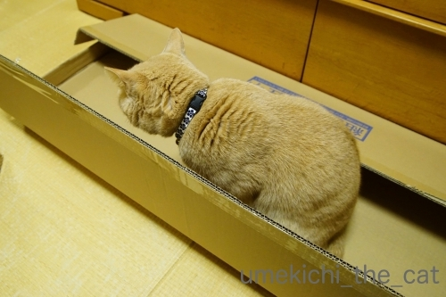
細長い箱は新鮮ですか？
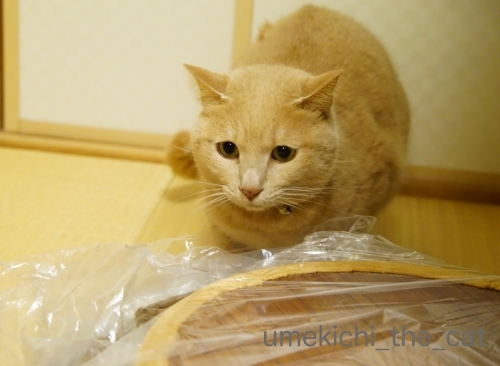
中の物を出し始めると興奮度アップ！
ガサガサ音を聞いていると気持ちが高まってくるんでしょうか。
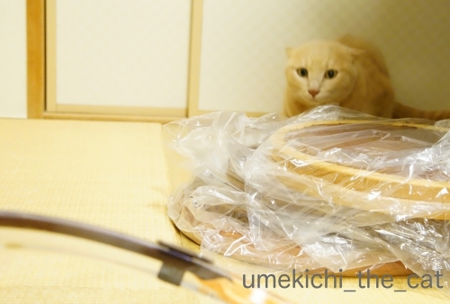
ねらって・・・
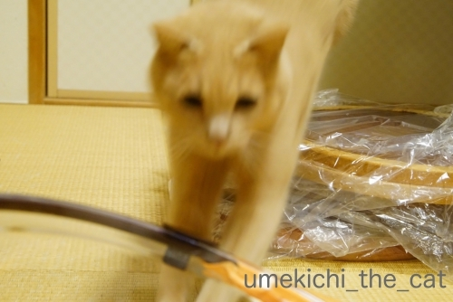
ばびゅっと(≧▽≦)
（臨場感を重視しております）
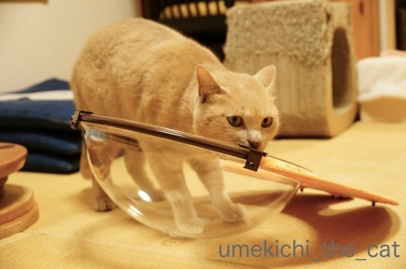
これはー！
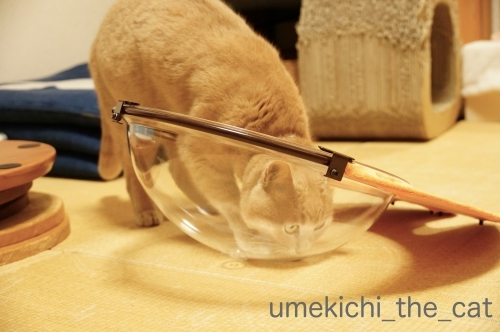
なんやーー！！
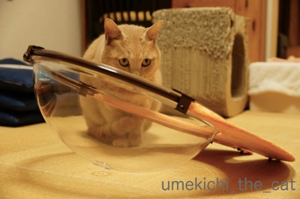
なんなんやーーー！！！
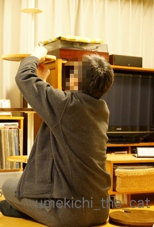
組み立てるおっとと
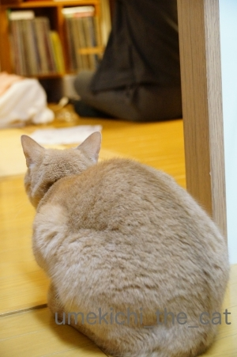
それを見守る梅吉。
キャットタワー、クリアハンモック付きを買いました！
正確には某サイトで溜まっていたポイントでゲットしました＾＾
更にいうならば
『梅吉が毎朝の添い寝＆お膝活動＆猫見風呂で貯めたおとーさんポイントでゲットした』
だそうです(*>艸<)
旅行に使う、普段買わないようなお酒を買う、ふるさと納税に使う
（ポイントをふるさと納税に使用出来るんですね。納税した分は還付されるので
これが一番割りの良い使い方かもしれません）
など話が出たのですが梅吉用品に化けましたw
このタワー、リュカさんちのと全く同じなの＾＾

さ！出来ましたよ。
さてさて梅吉の反応はいかに！？続きます＾＾
その同じタワーを持つリュカさんが旅の途中大阪に寄ってくれました。
くつしたにゃんさんと３人で集合！
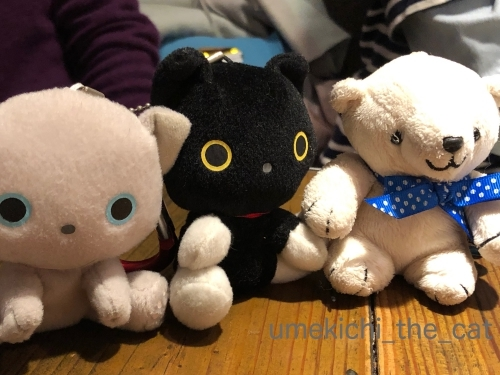
コロル二世くんとくつしたにゃんさんのにゃんこの化身達。
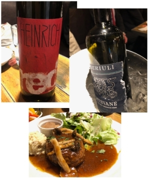
昼間っから泡だ赤だ白だと飲みましたよ＾＾
酔っ払ってもちゃんと新幹線に乗れるように（爆）
新大阪駅直結の駅ビルアルデ新大阪に行ったのですがここ便利です！
平日昼過ぎでしたが並んでいるお店もありました。利用客、多いみたい。
どっしり腰を落ち着けて飲んで喋る気満々だったので
パシオン・エ・ナチュールというワインのお店に席を予約。
一年分くらい喋って楽しかったー！
東京？大阪？どっちかでまた会おうね0(≧▽≦)0
 ↑ガブッと一押し↑
↑ガブッと一押し↑
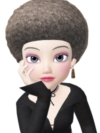
ちぃ吉、本当に大きくなって・・・
アフロ一族に馴染めなかったママンが
幼いあなたを連れて家を出てしまって。
ママンが一族との関わりを一切拒んだから
ママンのお葬式は姉さんとemiちゃんと３人で
遠巻きに見送ったわ。
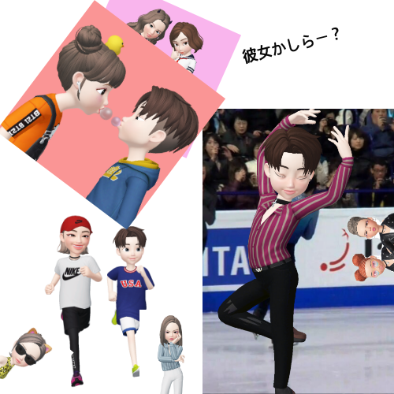
ちぃ吉のことは
emiちゃんと二人
ずっと見守っていたわ。
彼女が出来た時
良いトレーナーが付いた時
スケートの競技会も・・・
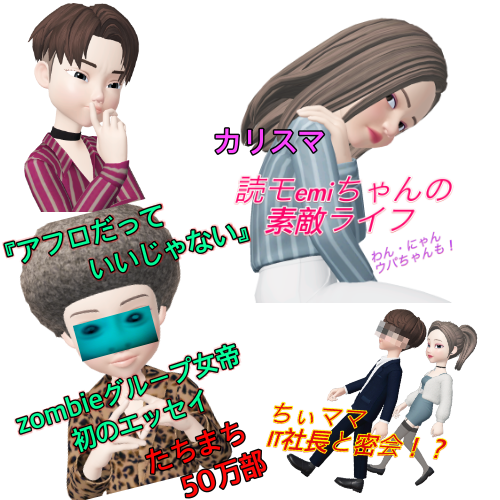
（読モ＝読者モデル）
ママンだって姉さん達には会いたかったんだよ・・・
姉さん達がメディアに取り上げられるとそれをこっそり買ってきて。
もちろん僕も内緒で見てた。
そうだったの・・・（涙
ところであなたは良いスポンサーを見つけて
カナダでスケートの練習をしているって。
どうしてこんなところにいるの？
一体なにをしているの？
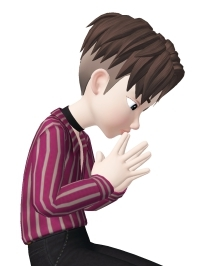
ちぃ姉さん、実は僕のスポンサーは
ある組織を率いてるんだ。
優秀なアスリートを集めて支援する代わりに
アスリートは組織のある訓練を受けるんだ。
このお店の仕事は訓練の一環でもあるって。
人間の心理を知るにはこういう場所が一番だと。
組織ってね、実はスパイ集団なんだ。
その訓練はね・・・
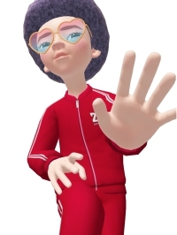
ちょっとまった！話はそこまでだ！！
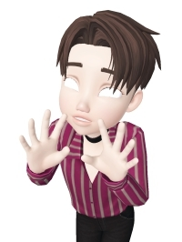
あ！あなたはー！！
つづく・・・
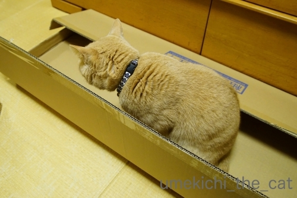
細長い箱は新鮮ですか？
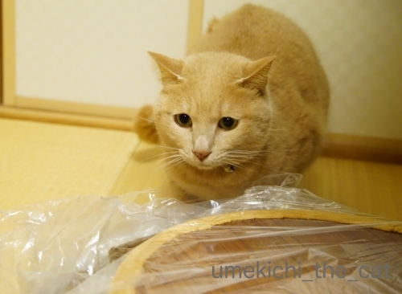
中の物を出し始めると興奮度アップ！
ガサガサ音を聞いていると気持ちが高まってくるんでしょうか。
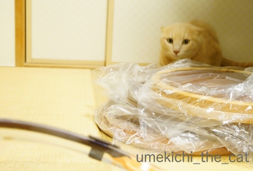
ねらって・・・
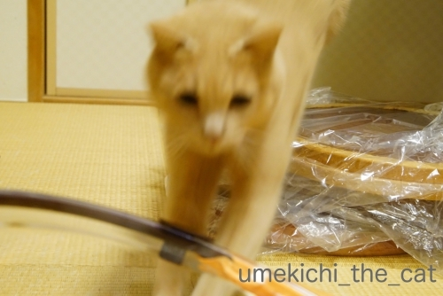
ばびゅっと(≧▽≦)
（臨場感を重視しております）
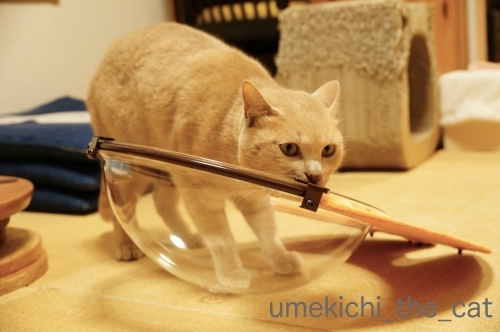
これはー！
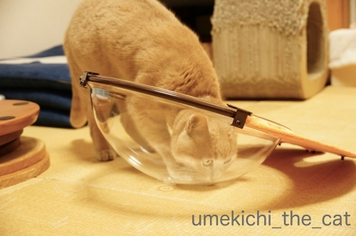
なんやーー！！
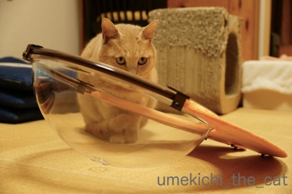
なんなんやーーー！！！
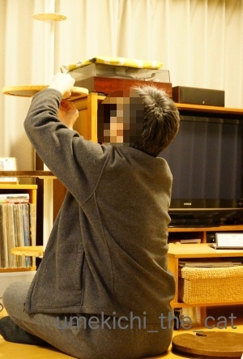
組み立てるおっとと
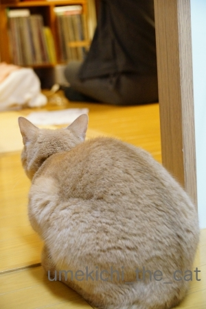
それを見守る梅吉。
キャットタワー、クリアハンモック付きを買いました！
正確には某サイトで溜まっていたポイントでゲットしました＾＾
更にいうならば
『梅吉が毎朝の添い寝＆お膝活動＆猫見風呂で貯めたおとーさんポイントでゲットした』
だそうです(*>艸<)
旅行に使う、普段買わないようなお酒を買う、ふるさと納税に使う
（ポイントをふるさと納税に使用出来るんですね。納税した分は還付されるので
これが一番割りの良い使い方かもしれません）
など話が出たのですが梅吉用品に化けましたw
このタワー、リュカさんちのと全く同じなの＾＾

さ！出来ましたよ。
さてさて梅吉の反応はいかに！？続きます＾＾
その同じタワーを持つリュカさんが旅の途中大阪に寄ってくれました。
くつしたにゃんさんと３人で集合！
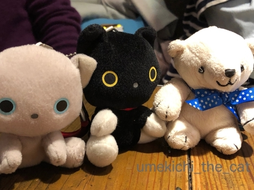
コロル二世くんとくつしたにゃんさんのにゃんこの化身達。
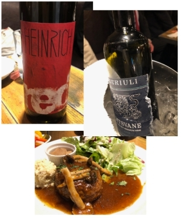
昼間っから泡だ赤だ白だと飲みましたよ＾＾
酔っ払ってもちゃんと新幹線に乗れるように（爆）
新大阪駅直結の駅ビルアルデ新大阪に行ったのですがここ便利です！
平日昼過ぎでしたが並んでいるお店もありました。利用客、多いみたい。
どっしり腰を落ち着けて飲んで喋る気満々だったので
パシオン・エ・ナチュールというワインのお店に席を予約。
一年分くらい喋って楽しかったー！
東京？大阪？どっちかでまた会おうね0(≧▽≦)0
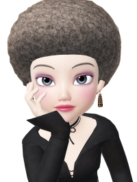
ちぃ吉、本当に大きくなって・・・
アフロ一族に馴染めなかったママンが
幼いあなたを連れて家を出てしまって。
ママンが一族との関わりを一切拒んだから
ママンのお葬式は姉さんとemiちゃんと３人で
遠巻きに見送ったわ。
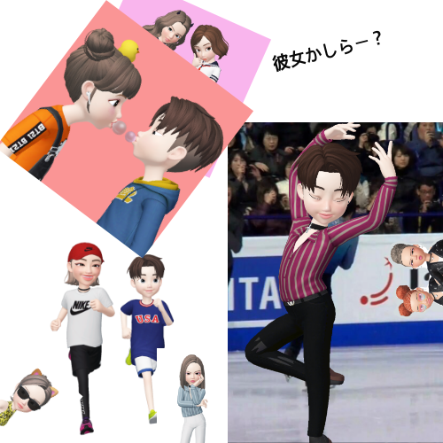
ちぃ吉のことは
emiちゃんと二人
ずっと見守っていたわ。
彼女が出来た時
良いトレーナーが付いた時
スケートの競技会も・・・
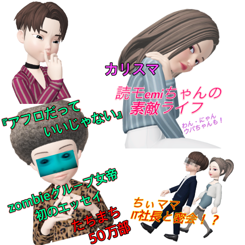
（読モ＝読者モデル）
ママンだって姉さん達には会いたかったんだよ・・・
姉さん達がメディアに取り上げられるとそれをこっそり買ってきて。
もちろん僕も内緒で見てた。
そうだったの・・・（涙
ところであなたは良いスポンサーを見つけて
カナダでスケートの練習をしているって。
どうしてこんなところにいるの？
一体なにをしているの？
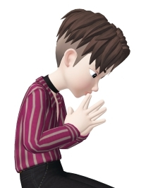
ちぃ姉さん、実は僕のスポンサーは
ある組織を率いてるんだ。
優秀なアスリートを集めて支援する代わりに
アスリートは組織のある訓練を受けるんだ。
このお店の仕事は訓練の一環でもあるって。
人間の心理を知るにはこういう場所が一番だと。
組織ってね、実はスパイ集団なんだ。
その訓練はね・・・
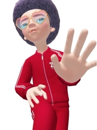
ちょっとまった！話はそこまでだ！！
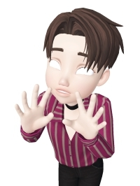
あ！あなたはー！！
つづく・・・
2019-03-21 00:00
nice!(85)
コメント(32)

カフェオレ色の梅吉

梅吉 2023年8月10日 永眠


梅吉と出会った譲渡会

犬猫の理由なき殺処分ゼロ
妄想広告
UMEKICHI 光

爆発的に早い！
時々攻撃的！
Thanks to Mr.Boss365
爆発的に早い！
時々攻撃的！
Thanks to Mr.Boss365

梅吉さんがタワーの透明カップに入ってる写真が楽しみです!
昼間っからの女子飲み会楽しまれたご様子で良いですね。そしてzombiekongの「アフロだっていいじゃない」売れたんですね? もうおかしくってお腹かよじれそうです~。
by zombiekong (2019-03-21 01:03)
どんな使い方してくれるか、楽しみですね＾＾
by ぽちの輔 (2019-03-21 06:04)
んもぅ、コメント書きたいことがたくさんあって大変よ！(笑)
梅吉くん、新しいタワー良かったね！
ふるさと納税もいいけど、やっぱり梅吉くんのものが一番嬉しいよね(^^)
はやくその透明ハンモックに入って、おばちゃんに
ピンクの肉球を見せテェー！あおだと毛の塊にしか見えないから(笑)
新大阪での飲み、めっちゃ楽しかったー！
ギリギリまで一緒に飲めたから、新大阪で飲んで大正解でした。
2人にはちょっと遠かったかもだけど、ごめんね。
また近いうち会えると思ってまーす(^^)
今度大阪行くときは、また梅吉くんに会うよー(笑)
ZEPETO、驚きの展開だわ！！
なるほど、お母さんはアフロに馴染めなかったのね。お父さんも見事なアフロなんだろうな(笑)
そして、スパイ組織がスポンサーだったとは！！
続きが気になるわーー！
布団の中で読んだら目が覚めた(笑) 起きますww
by リュカ (2019-03-21 06:17)
気に入ってくれると嬉しいですねぇ～(#^.^#)
クリアカップに入っているところを
下から見るのが楽しみになりそうです♪
by きぃ (2019-03-21 08:05)
段ボールにガサガサ、最後はキャットタワーとくれば梅吉さんにとっては至福ですね(^_^)
家族移動はいつも車でしたが、先日久しぶりに新幹線に乗りました。飲めるという楽しみに今更ながら目覚めてしまいました(^_^;)
by kou (2019-03-21 08:51)
にゃんこってどうしてカサカサ音がするものとか箱とか大好きなんでしょうねー。梅吉くんのワクワク感が伝わってきます。
お！透明の半球ですぐにわかりましたよ！リュカさんちの2本目のキャットタワーですねー。梅吉くんも入ってくれるかしらー。わくわく。
そのリュカさんとお会いになったってのは、別の話のついでに聞きましたー。
新大阪、いつもサクッと乗り換えなだけで全然知らなかったです。
近いうちに行く予定があるからチェックしておこうっと。
ZEPETO妄想劇場、すごい展開になってきましたね。
えーん、先が気になるよーーーー。
by ChatBleu (2019-03-21 08:52)
梅吉さん、大興奮嬉しいね^^
by ニコニコファイト (2019-03-21 10:11)
何か盛りだくさんだわん。
淡路帰りのリュカさんと新大阪で集会だったんですね～
呼んでくれたら会社休んででも行ったのにぃ～
リュカさんちと同じキャットタワーですか、いいですね～♪
透明のハンモックからの眺め・・・期待が膨らみます。
ZEPETO劇場なるほど～な展開です(^^
一族の秘密が明らかになりましたな。
モザイクが入っているのがツボでした。
by marimo (2019-03-21 10:35)
こんにちは。
梅吉くん、ガサガサ音で耳が水平？戦闘態勢ですね！！（笑）いい感じの写真です。
リッカさん宅と同じキャットタワーかな？「ポイントでゲット」はナイスです。
おっとさん、組み立てお疲れ様です。梅吉くん見守ってますね？いい猫背（笑）
リュカさん合流、「一年分くらい喋って」は凄そう（爆）良い機会でしたね！！
ZEPETO！！
「アフロだっていいじゃない」良いコピーに良い画像、女帝？（笑）！！
盛りだくさん過ぎて反応出来ない感じ！？(=^･ｪ･^=)
by Boss365 (2019-03-21 12:07)
透明楽しみ（＾＾）
emiさん読モだったのかぁ
俺もモデルでしたよ マニアックな雑誌の（笑）
by (。・_・。)２ｋ (2019-03-21 14:12)
あ～ついに透明ハンモックデビューですね(*^▽^*)
いいな～いいな～♪
ニャンコグッズを何か買うと開梱からイベントスタート、組み立て設置でさらに盛り上がりますよね^^
飲んべえは最寄駅近くで飲む、乗り遅れず無事帰宅するためには結構大事だと思います！
by ゆきち (2019-03-21 16:11)
梅吉さん、愛されてますねぇ♪( ´▽｀)
透明ハンモック、良いなぁ( ^ω^ )
梅吉さん、ワクワクが止まりませんねぇ=(^.^)=
普通のニャンコサイズだと大体５kgまでなので
デカいニャンコの我が家はいつも最初に耐荷重を確認して
涙を飲みます( T_T)
by ニッキー (2019-03-21 16:56)
狙う梅吉さん 遊ぶ梅吉さん
透明のハンモック・・・今後の展開が楽しみです♪
妄想劇場も 展開が楽しみです～
by チャー (2019-03-21 17:55)
梅吉さん、組み立てられるハンモックを見つめていますね！
どんな感じで遊ぶのでしょうか、楽しみですね(^^)
by ma2ma2 (2019-03-21 18:04)
梅吉さん、狙って、狙ってすでにマーキングが終わりましたね（笑）
透明なハンモックでまったりする写真も拝見できますね（笑）
ちぃ吉くん、アスリートだったのね、しかも組織のワォゥ（笑）
by kiki (2019-03-21 18:10)
梅吉さんのわくわくぶりが可愛い～！
箱や包装も大好きですよね♪
梅吉さんへの愛情ポイントがたまって溢れ出したのですね。
ハンモック、気に入ってくれるといいなあ～楽しみにしてます。
アフロ！？
どんどん物語が展開してますね～スパイ物？いったい、どうなるの？！＾o＾
by sana (2019-03-21 18:24)
こ、これは！あれだ！
今のところ、じっとみつめる冷静な梅吉さんですが
はたして、どうでるか！
楽しみです。
by ふにゃいの (2019-03-21 21:01)
クリアハンモックなんてあるのですね！^^; ｼﾗﾅｶｯﾀ
入るのが楽しみですが、まだ警戒しているかなあ。^^)
by yes_hama (2019-03-21 21:27)
梅吉さんの興味津々な感じがいいですね。
ちぃさんがアフロでemiさんが読モでzombiekongさんが女帝。
そんな世界に居るんですね。
私にはこれからどうなるのか予想不可能です＾＾
by riverwalk (2019-03-21 22:38)
梅ちゃんの狙っているお顔がツボです(≧ω≦)
こういうの、絶対チェックしに来ますよね(笑)
透明のハンモックを見た瞬間、これはリュカさん
家のヤツと一緒？と思いました。当たりだー！！
梅ちゃんが気に入ってくれるといいですね♪
新大阪駅へはあまり行かないので、詳しくないのですが
いろいろ入っていて探索し甲斐がありそうですよね。
ZEPETOは盛りだくさんすぎてツッコめませんｗｗｗ
by カトリーヌ (2019-03-22 11:21)
新しいタワーと新しい箱！
楽しいこといっぱいやねー！
そして新大阪ワイン女子会、さぞかし盛り上がったことかと（≧∇≦）
by よーちゃん (2019-03-22 12:05)
間もなく梅吉くんのお腹が下から見えるのね！楽しみ～～(*^^*)
by palpal (2019-03-22 15:27)
わー！いいな～♪
梅吉くんにも透明ハンモック付きのキャットタワーが来たのね～。
インスタグラムで見て気になってたんだ～(*^-^*)
リュカさんとくつしたにゃんさんとの大阪飲みは盛り上がったんだろうね。
1年分しゃべった♪ホント！女子は話が尽きない。
ZEPETO。ちぃ吉と私たちにはこんないきさつがあったのね。
お互いがお互いをみまもり続けていたなんて・・・
涙の場面なのに、見守る2人の姿がおかしくて吹き出しちゃった(≧▽≦)
私が紹介できるとしたら、素敵ライフじゃなくて「ずぼらライフ」かな～？
ちぃママもスキャンダルには気を付けて！！
ちぃ吉、どうなっちゃうんだろう。ちぃちゃん、ちぃ吉を守って！お願い！
by emi (2019-03-22 16:14)
こんにちは。
大相撲中継を録画しようかな？
出来れば、アフロなヘアー（爆）または、
パリコレのランウェイ・ジェンダーレスモデルでお願い致します。
zombieさんアイコン・アバターでもOKです（爆）です。
大相撲、楽しんで来て下さい。アップ記事が楽しみです！？(=^･ｪ･^=)
by Boss365 (2019-03-22 17:59)
梅吉さん、めっちゃテンション高い〜〜〜(^m^)
クリアハンモック、っていうのが、猫飼いゴコロをくすぐるポイント?!
あんなんとか、こんなんとか、寝ている梅吉さんの秘密が丸見えかしらーーー♡
by のらん (2019-03-23 10:32)
梅吉お坊ちゃま〜！！愛されてんな〜！！
おとーさんは梅吉お坊ちゃまに喜んで貰おうと一生懸命組み立ててくれたんやな(^^)b
クリアボウル入って肉球披露を楽しみにしてるで〜(≧∇≦)♪
そして久々の再会、楽しかった！！でも時間が足りない！喋り足りない！本当に楽しい時間を過ごせました〜！
アルデは大正解でしたね。次はしゃぶるーさんがいらっしゃるかな！？(๑˃̵ᴗ˂̵)
by くつしたにゃん (2019-03-23 16:10)
うわー、おっきな新しいタワー、いいな！
これだけ喜んでくれると、買った甲斐もありますね。
ん？あれ？・・・一番喜んだのはダンボールだったりして・・・^^;
いいなー、ウチもおっきなタワー、ほしいなぁ・・・（無理だけど・・・）
Zombieグループ、大企業っぽいスね・・・
by Ja-Kou66 (2019-03-24 01:26)
ガサガサ音 にゃんこ大好きですよね＾＾
にゃんこだけではなく てんてんもやってくるんですよ＾＾；
by てんてん (2019-03-24 09:51)
zombiekongさん＞
うふふふふ♡透明カップにイン！楽しみにしててくださいねー！
って実はまだ全身入ってくれてません。
そのうち楽しさに気づいてくれるだろうと様子見ですw
「アフロだっていいじゃない」は
今年の本屋大賞も狙えそうな勢いです(*>艸<)
ぽちの輔さん＞
子猫のように上がって下がって大はしゃぎ
という感じではないのがちょっと残念ですが・・・
今の所高いステップでまったりと下界を見下ろして楽しんでます＾＾
季節が変わると使い方も変わる予感！
リュカさん＞
お高いネコ用品を手に入れるにはちょうど良い機会でした！
梅吉は高いところに登るのが大好きだし遊び場所も増えるし
なっていっても押しつぶされるピンクの肉球が見たいしー！！
まだ片足しか入ってくれないんだけどそのうち入ってくれるはず。
私も鼻息荒く期待してます0(≧▽≦)0
新大阪飲み、確かにウチからはちょっと距離のある場所だけど
電車に乗っちゃえば着くから全然遠く感じなかったよー。
時間がもっとあったら何時間でも喋ってられたよね、きっとwww
次回は梅吉共々来宅をお待ちしてますよ(^_－)☆
ZEPETOはこの先リュカさんの相方さんも登場しますよ！
アバター教えてもらって良かったー＾＾
話に奥行きと幅が出たわ(*>艸<)
きぃさん＞
タワーはもう何年も前から梅吉のものだったように
我が物顔して使ってますよw
クリアカップのお楽しみはまだ味わえてないのですが
そのうちきっと、です！！
kouさん＞
盛りだくさんの時間に梅吉も興奮してましたよ(*>艸<)
楽しんでもらえるのは何より嬉しいことですね＾＾
うちは大阪に越してきて渋滞の激しさと高額な駐車場代
交通の便利さを見て車を手放しました。
以来移動飲み、すっかり目覚めて楽しんでますwww
ChatBleuさん＞
飽きてきちゃったおもちゃでもレジ袋（梅吉の大好物おもちゃw）
をくっつけてカサカサ音をさせると
お気に入りおもちゃに早変わり〜ってこともありますよね＾＾
キャットタワーの透明ボウルはおもちゃを転がして遊ぶ場所
と思っているようでまだ(足とか全身とか）入ってくれてないのーw
そのうち、と思って私も楽しみつつ待ってまーす(≧▽≦)
新大阪直結（というか１階下）のアルデ
（あるで〜、と関西イントネーションでお願いしますwww）
新世界の有名串カツ屋のだるまや堺の美々卯（うどんすき）
なども入っていて大阪食も楽しめるようです。
その他新大阪駅自体がリニューアルしていろんなお店が増えたので
とっても便利になりましたよー。
是非是非チェックしてみてください＾＾
ニコニコファイトさん
はい＾＾とっても喜んで大興奮でしたー！！
marimoさん＞
最近ブログが長すぎる・盛りだくさんすぎる・・・
と自分でも思ってますw
話のくどい＆長いおばちゃんみたいやわ〜www
キャットタワー、どうやら透明ハンモック付きは
このメーカーone&onlyな様ですよー。
コンパクトな感じなので狭い我が家にも圧迫感が無いかな？と
即決でした＾＾
新大阪飲み会、平日昼間しかも月曜日！だったので
お仕事されている方には声がかけにくくて・・・
今度リュカさんにはたっぷり時間をとって
関西に来ていただきましょう(≧▽≦)
Boss365さん＞
お耳ぺったんこになってますよねw
やる気と興奮に満ちた（ブレているけど）梅吉らしい
良い写真だ！と私も思ってます＾＾
キャットタワー、
商品についてるタグの写真をリュカさんに見てもらったら同じだってwww
透明ハンモックのついている商品はどうやらこれしかないようです。
意外に省スペース、以前からあったように我が家になじんでおりますよ。
ZEPETOへの反応、ありがとうございます！
じぶんでも何やってるんだかなーですが初志貫徹、やり抜きますよ(*>艸<)
大相撲、ノーマルスタイルのちぃさんで見に行きました（爆
生はテレビからは得られない熱気と迫力。
横綱土俵入り時には、確かに土俵に神がおわします。
相撲協会、力士の皆さんにはそれを忘れないでいただきたいです。
by ちぃ (2019-03-25 16:02)
2kさん＞
なんですとー！読モ！！
しかもマニアックな雑誌なんですねぇ〜。
脱いだりしちゃって無いですよねwww
ゆきちさん＞
買っちゃいましたよー！
透明ハンモック付きキャットタワー＾＾
ゆきちさん宅のようなポールが二本のものも考えたのですが
狭い我が家に設置スペースは無くw
このタワーは意外に省スペースで圧迫感もなく良かったです。
新大阪駅飲み会、すぐに電車に乗れるっていいわー。
私もらくらく帰宅でした！
電車では寝込まずにちゃんと人として正しく家まで帰れました。
が、そういう時って家に入った途端酔いがまわるんですよねー！
ソファに座ったまで覚えてるんですがその後は？？？
気づいたらおっとが帰ってきてましたwww
ニッキーさん＞
ニッキーさんちのタワーのように
モフ玉が出来るのも魅力的だったのですが・・・
我が家は狭いので省スペースも条件。
このキャットタワーになりました＾＾
おおお！耐荷重、全然確認してませんでした。
今調べたら5kgまで。ギリで大丈夫です、がこれ以上太れない。
良い目安になって健康上も良いかも！
チャーさん＞
にゃんこは何でも遊びにして楽しむ天才ですから！
走り回って楽しんでくれました＾＾
透明のハンモック、まだ核心には至ってないので（笑
私も今後の展開が楽しみです！
ZEPETOもお楽しみに〜♪
ma2ma2さん＞
どんな風に遊んでくれるんでしょうか！
私たちが思いもつかない利用法をしそうでワクワクです＾＾
kikiさん＞
梱包を解いたそばからすりすり〜ぬりぬり〜www
設置したポールにも毎日すりすりとマーキングしております＾＾
透明ハンモックにはまだ全身入ってくれてないのですが
後々の楽しみができた、と私も期待しております！
ちぃ吉くんはフィギュアスケーターなんですよー(*>艸<)
ZEPETOのミッションで「イケメン男子高校生」とのお題の時に
(フィギュアの）羽生くんをイメージして変身しました！
羽生くん高校生じゃ無いのにwwwwww
sanaさん＞
設置したポールに初めて登った時よりも梱包を解いている時が
一番楽しそうだったかもしれませんwww
梅吉はおっとと絡むたびに（お膝とか添い寝とか）
ポイントをもらっていたようなんですが（笑）
そのポイントが4年分たまってキャットポールになったようですよ(*>艸<)
次の大きな買い物はポイントが貯まるまでお預け、でしょうか＾＾
ZEPETO、あと２〜３回で終わる予定です！
一体どうなるのか、
自分でも着地点が見えているようで見えていないようで(⌒-⌒;
by ちぃ (2019-03-25 16:28)
ふにゃいのさん＞
梅吉、いつまで冷静でいられるのでしょうかw
エキサイティングに使うのか
まったりともふもふ及び肉球を披露してくださるのか
私も楽しみでなりません＾＾
yes_hamaさん＞
クリアハンモック、あるのですよー＾＾
棚板式のもある様で
押しつぶされた肉球が見られる率はそちらの方が高いかも、ですw
新しいものに警戒している様子はないのですが
快適さに気づいていないという感じです(≧▽≦)
riverwalkさん＞
好奇心の強い梅吉なので箱を開けた瞬間から
ポール設置＆設置後も興味津々でしたよ＾＾
ゼペットは私も予測不可能ですwww
やっているうちにどんどん変わっていくー。
カトリーヌさん＞
狙っている顔、
わっくわく度マックス！！って感じですよねーw
写真ではお伝えしきれませんでしたがおちりもプリプリしてましたよ(*>艸<)
クリアハンモックのついているキャットポールはこの社の商品しかない様です。
リュカさんちのとタグもおんなじでした＾＾
ゼペットは見ていただけるだけでありがたいですよー。
自分でも、なんか一人で遠くに来ている感じ、がしてなりませんが（笑
そのうち必ず戻りますので（爆）もう少しお付き合いくださいませ(*>艸<)
よーちゃん＞
新しもの好きの梅吉としては大興奮の時間でしたよ＾＾
新大阪で飲み会、
「どうせたくさん飲むんだから新幹線に近い方がいいんじゃない？」
といったのはおっとでしたwww
集まったメンバーの正体、見抜かれてました(⌒-⌒;
by ちぃ (2019-03-25 18:14)
palpalさん＞
それがなかなか思い通りに入ってくれませぬw
なにせ猫様ですから。気長に待ってくださいませ(*>艸<)
emiさん＞
風邪、大丈夫？？
キャットタワー、ついに手に入れちゃいました！
子猫の頃に導入していたらはしゃぎすぎて
落下しまくりだったかもしれないけど
今はだいぶ行動も落ち着いたので安心して見てられます。
透明ハンモックには思う様に入ってくれないけど
そのうちね、と思ってます＾＾
ちぃ姉ちゃんとemi姉ちゃんは神出鬼没w
しかも常に変装しているのが笑えるでしょ(*>艸<)
emiちゃんはzombieグループ（企業）の広報部長なの＾＾
なのでプロのモデルさんじゃなくて読モ。
それも企業イメージアップの戦略でもあります。
「ずぼらライフ」？ZEPETOの中ではお手伝いさんがいるよー！
盛り込めないけど人物の背景、いろいろ掘り下げてますwww
のらんさん＞
あんなとこ、こんなとこ、どんな風にご披露できるか
私も楽しみでなりません！
一番興奮しているのは多分わたし、ですねー(*>艸<)
クリアハンモック、長毛さんだと毛玉にしか見えない様なんですが
ここは短毛種梅吉の本領発揮！と行きたいですヾ(*ΦωΦ)ﾉ
くつしたにゃんさん＞
キャットタワー、平日に届いたので組み立ては週末だな〜
って思ってたんですが夜になって黙々と組み立て始めましたよ(*>艸<)
押しつぶされる肉球を一番見たがっているのはおっとかもしれませんwww
クリアボウルにはまだ一足しか入ってなくて・・・
どこでやるとウケるのか、梅吉なりに狙っているのかもしれませんよー。
昼飲み会、まだまだ喋ってられたよね！
時間全然足りない！！またみんなで集まれます様に＾＾
Ja-Kou66さん＞
ダンボール開けから喜んでくれてまずは何よりです＾＾
ってそう！ダンボール開けが興奮マックスだった様ですよw
キャットタワーは喜んでますが前からあった感、当たり前感がすごいです。
馴染みすぎ！
Zombieグループは飲食業を中心に幅広く手がけてます。
zombiekong姉さん、やり手なんです(*>艸<)
てんてんさん＞
ええ！かめのてんてんくんもガサガサ好き、なんですね＾＾
何だろう、美味しいものが出てくる合図、とかでしょうか。
私もおっとが帰ってきてガサガサ音がすると見に行きますから(*>艸<)
by ちぃ (2019-03-25 20:11)